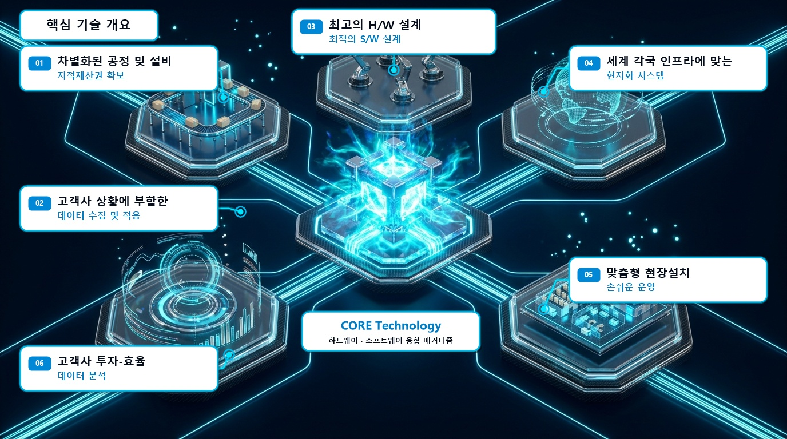

4개 휠의 개별 독립 모터 제어 메커니즘을 채택하여 물류 컨베이어 라인의 속도 저하와 병목을 완벽히 해결합니다. 360도 전방향 가변 각도 분기, 충격 없는 저소음 고속 분류로 현장의 생산성을 극대화합니다.

4분할 독립 구동 팝업 휠 아키텍처
4개의 휠이 독립된 서보/BLDC 모터에 의해 0.05초 단위로 실시간 회전축을 연동 제어합니다.전통적인 체인 및 일체형 벨트 방식의 잦은 고장과 화물 회전(Spin) 문제를 4분할 독립 구동 메커니즘으로 원천 해결했습니다.
화물이 센서를 통과하는 즉시 4개의 팝업 휠 모듈이 수직으로 상승(Pop-up)하며 목표 분기 라인의 접선 속도와 동기화됩니다. 화물의 밑면에 가해지는 충격을 완충 기구로 흡수하여 연약한 포장 화물이나 파손 위험품도 안전하게 이송합니다.
마모가 발생한 특정 휠만 3분 내에 원터치로 교체 가능한 퀵 릴리즈 모듈 구조 설계.
공압 실린더 대비 에어 콤프레셔 배관이 불필요하며, 정밀한 높낮이 조절로 무소음 팝업 실현.
광전 센서와 로터리 엔코더가 인입 컨베이어의 속도를 실시간 감지하여 미끄러짐(Slip) 제로화.

고객사의 현장 컨베이어 폭(Width), 이송 속도 및 화물 제원에 맞춰 주문 제작(Customizing) 가능합니다.
| 구분 (Item) | 기술 규격 (Standard Specification) | 특장점 및 비고 |
|---|---|---|
| 모델명 | ATA-PWD4-Series (4-Quadrant Pop-up Diverter) | 특허 등록 제 10-2956028 호 |
| 처리 능력 (Throughput) | 시간당 3,600 ~ 4,500 pcs (화물 길이 400mm 기준) | 고속 풀필먼트 및 택배 허브 최적화 |
| 이송 속도 (Conveying Speed) | 정격 1.5 ~ 2.5 m/s (인버터 가변 속도 제어 지원) | 최대 3.0 m/s 라인 옵션 지원 |
| 방향 전환 각도 | 30°, 45°, 90°, 양방향 180° 및 360° 전방향 가변 | 소프트웨어 파라미터 변경 즉시 반영 |
| 적용 화물 범위 | 골판지 박스, 플라스틱 토트박스, 의류 폴리백, 스티로폼 박스 | 최소 100g ~ 최대 50kg 화물 안정 이송 |
| 구동 휠 및 모터 | 고탄성 우레탄 코팅 휠 4개 + 독립 고효율 BLDC 모터 4세트 | 미끄러짐 방지 및 소음 65dB 이하 |
| 리프팅 메커니즘 | 정밀 서보 캠 리프팅 (또는 에어 실린더 방식 선택 가능) | 0.05초 초고속 상하 반응 속도 |
| 제어 인터페이스 | PLC (EtherNet/IP, PROFINET, Modbus TCP), 디지털 I/O | WCS / WMS 물류 상위 시스템 완벽 연동 |
고밀도 소팅과 신속한 화물 분기가 요구되는 첨단 스마트 물류 센터에서 탁월한 신뢰성을 검증받았습니다.
다품종 소량 상품 출하 라인에서 박스 크기와 중량 차이로 인한 정체 없이 초고속 분류를 지원합니다.
피크 타임(야간 집중 시간대) 대용량 화물의 권역별 분기 및 슈트(Chute) 연결 지점의 병목을 완전 제거합니다.
화물 충격 흡수 메커니즘을 통해 파손 위험이 높은 유리 앰플, 바이알, 정밀 전자 부품 포장물을 무진동 분기합니다.
현장 도면 검토, 시뮬레이션, 맞춤 설계부터 시공 및 유지보수까지 주식회사 에이티에이기술의 전문 엔지니어링 팀이 원스톱으로 지원합니다.